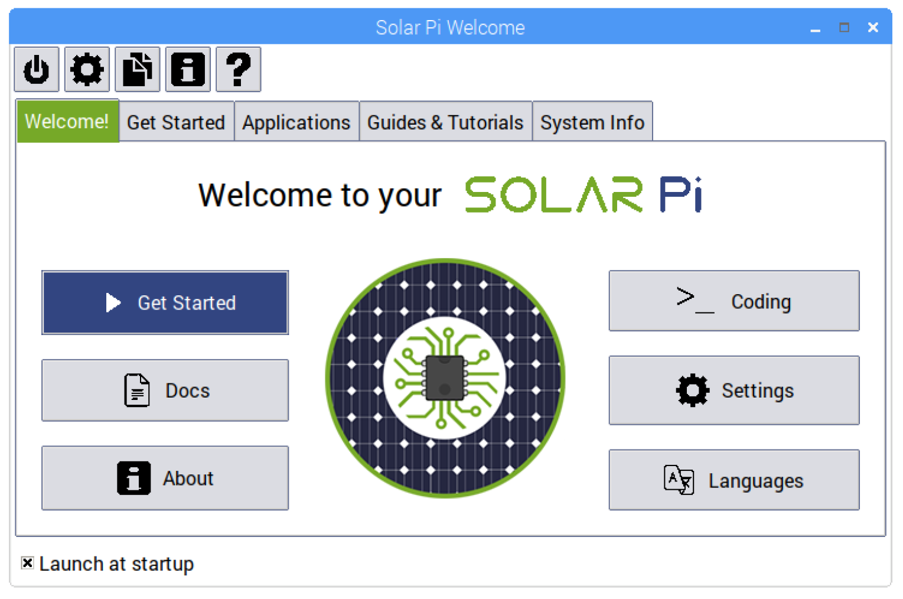
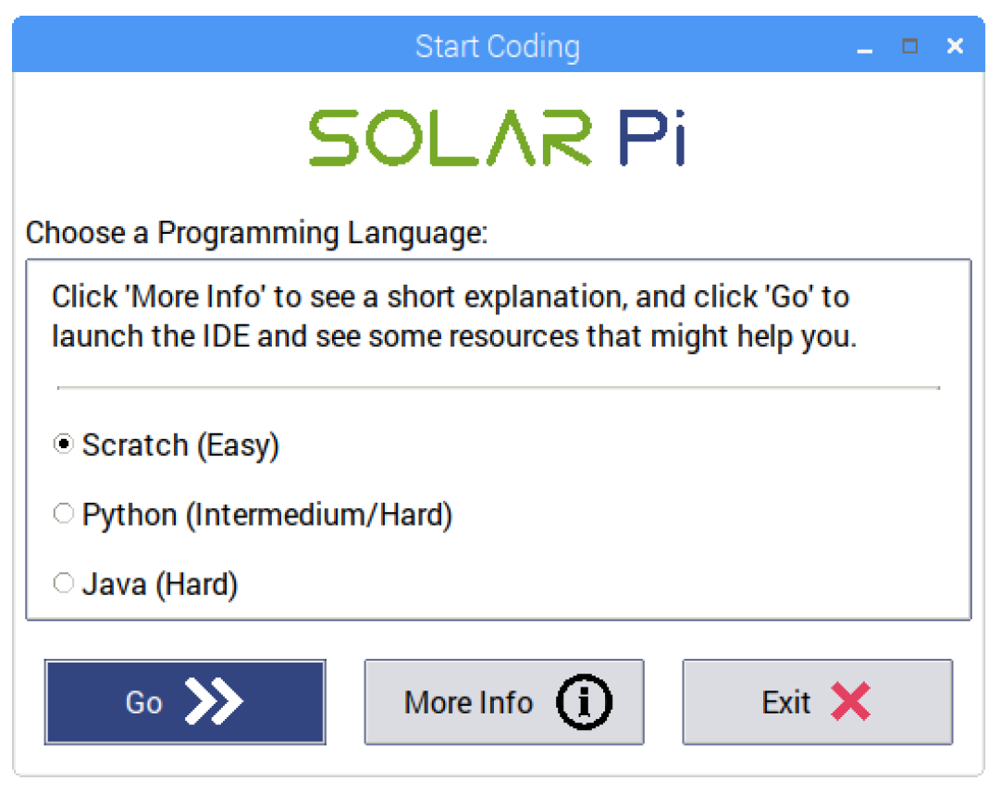
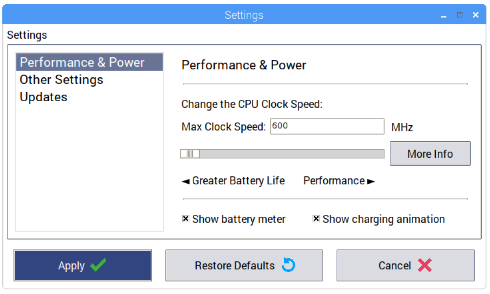
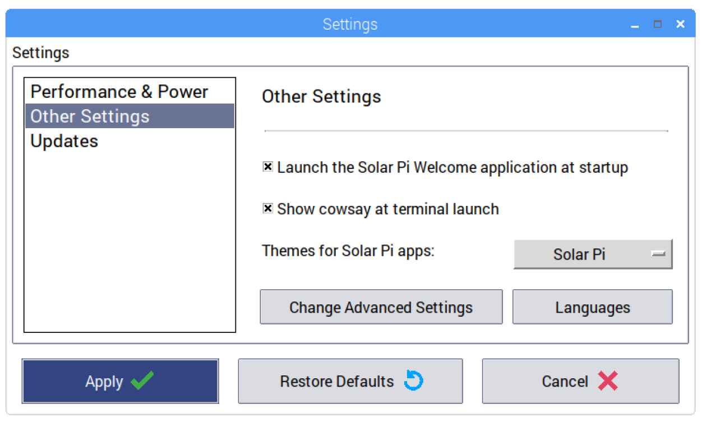
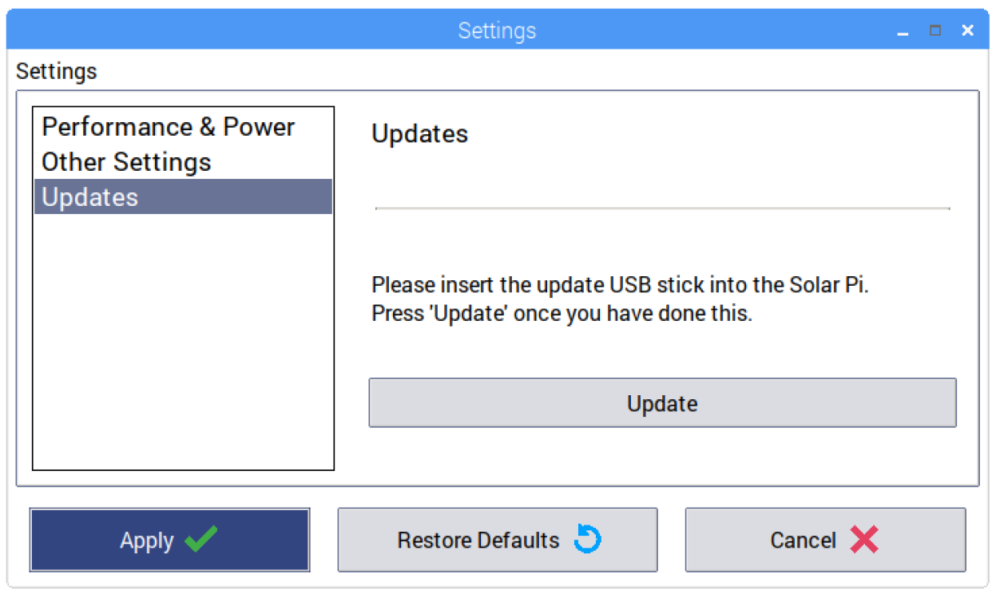
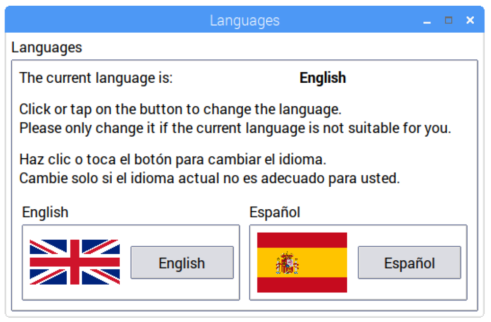
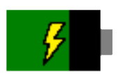

Solar Pi Apps, Guides & Tutorials
Info
All of the Solar Pi apps were created with appJar, a simple tkinter GUI wrapper for Python.
Your Solar Pi comes with a few custom apps that we have written to help you use your Solar Pi, along with some offline guides and tutorials that you can access. Here, we'll explain what each one is for, and how to use them.
Warning
Solar Pi apps can be found at /usr/local/bin/Solar Pi. Please do NOT modify or save anything here, as important things might get broken and any files saved here could be deleted during an update. If you want to have a play, copy the folder, and play with that :)
Solar Pi Welcome
This is the main Solar Pi app that you see when you first log on to your Solar Pi. The toolbar at the top gives you options to shutdown, reboot of log out of your Pi. Also, you can change settings, open the file manager, see what the Solar Pi project is about and read these docs.
Welcome!

This tab introduces you to your Solar Pi. There are links to various, useful apps here, such as the languages app to allow you to change the display language of your Solar Pi.
Starter Guide
In this tab, it explains the basics of using your Solar Pi. It also provides a link to this page in the docs.
Click on the button to read about that topic.
Applications
The applications tab shows you apps that you might find useful. Click on a line in the box on the left to select it, then to launch it, click on the button.
Guides & Tutorials
Here, you'll find the guides and tutorials for programming. Like the Applications tab, click on a line in the box on the left and to launch it, click on the button.
System Info
In this tab, it displays the system information of your Solar Pi. It will give you information about your Solar Pi's hardware, software and disk usage.
Start Coding
This app helps you decide where to start coding. It explains the 3 main programming languages supported on the Solar Pi: Scratch, Python and Java.

To do this, select a language, and click More Info. A popup box should then appear giving you a brief overview of the language. Once you have decided, click Go, and the relevant IDE should launch.
Solar Pi Settings
The Solar Pi Settings app allows you to change settings for your Solar Pi. These are settings that can't be changed from the default Raspbian installation, and are specific to the Solar Pi. When you have finished changing the settings, ensure that you click Apply and reboot.
If you want to revert to default settings, click Restore Defaults and reboot if asked.
Performance & Power

These settings are related to the performance and power of your Solar Pi. The slider at the top of this section allows you to change the clock speed of your Solar Pi's CPU (Central Processing Unit - effectively the 'brain' of your Solar Pi.). The default is 1200MHz (Megahertz), which will give you maximum performance, but you can lower it to 600MHz if you would like to extend the battery life of your Solar Pi. There is also a text box where you can type the clock speed in, if this is easier for you.
The checkbox that's labelled Show battery meter controls whether you see the battery meter that is on the bottom left of your screen. If this gets in the way, you can remove it.
There is another checkbox that's labelled Show charging animation - uncheck it if you want to see the actual battery level while charging.
Other Settings

The checkbox that's labelled Launch the Solar Pi welcome application at startup controls if you see the Solar Pi Welcome app when you log in. This is on by default, but once you get used to using your Solar Pi, you can turn it off.
There's another checkbox that's labelled Show Cowsay at terminal launch - uncheck this if you don't want to see the rainbow cow/penguin when you open the terminal.
The next option is labelled Theme for Solar Pi apps:. This controls how Solar Pi apps look. The default is 'Solar Pi', but you can always change it by clicking on the box, and selecting a theme from the drop down menu.
Finally, at the bottom of the section, there are buttons which say Change Advanced Settings and Languages. The Change Advanced Settings takes you to the Raspberry Pi Configuration app, and will allow you to tweak things further. The Languages button takes you to the Languages app, and will allow you to change the display language of your Solar Pi.
Warning
Only go into the Advanced Settings if you know what you are doing!
Updates

You can update your Solar Pi from here. Insert the Solar Pi update USB stick, and press Update. To update your Solar Pi, you will need at least 30% battery. Please don't shut the Solar Pi down during this process, and be patient - the process may take a while.
Languages

This allows you to change the display language of your Solar Pi. If the language that is currently used is not suitable, you can change it by clicking on the button for your language. After that, you'll need to reboot your Solar Pi.
Battery Meter

At the bottom left corner of the display, you will find a battery meter. This displays how much charge you have left in the batteries. You can change the settings for this by going to Solar Pi Settings > Performance & Power
Solar Pi Docs
Not really an app, but still important. This is all the documentation for your Solar Pi. It opens in the Chromium web browser, to allow for easy navigation with a touchscreen. You can navigate different pages via clicking on the icon in the top left, and you can skip through different sections of a page through the menu on the right. You can search through the docs using the search bar in the top right. Links are highlighted in green, and these will take you to different places in the docs.
A Byte of Python
This isn't created by us! It's created by Swaroop C H, and you can view the original here. This is to demonstrate that the Solar Pi can display E-Books, so that users can learn about computing and programming.
This is a fantastic Python guide that teaches beginners how to start programming in Python. This opens in the Chromium browser, so that it is easy for you to use when using the touchscreen.
Java Guide
Again, this wasn't created by us! It's created by Tutorials Point and you can view the original here. This is to demonstrate how the Solar Pi can display offline webpages that allow users to still learn about computing and programming even though they might not be connected to the internet.
This offline website will teach you how to program in Java; a language that is available on the Solar Pi. Designed for beginners, you should be coding in no time! This also opens in the Chromium browser.
Moodle
An e-learning platform that allows you to learn about various topics. Log in with the following credentials:
-
Username:
solarpi -
Password:
solarpi